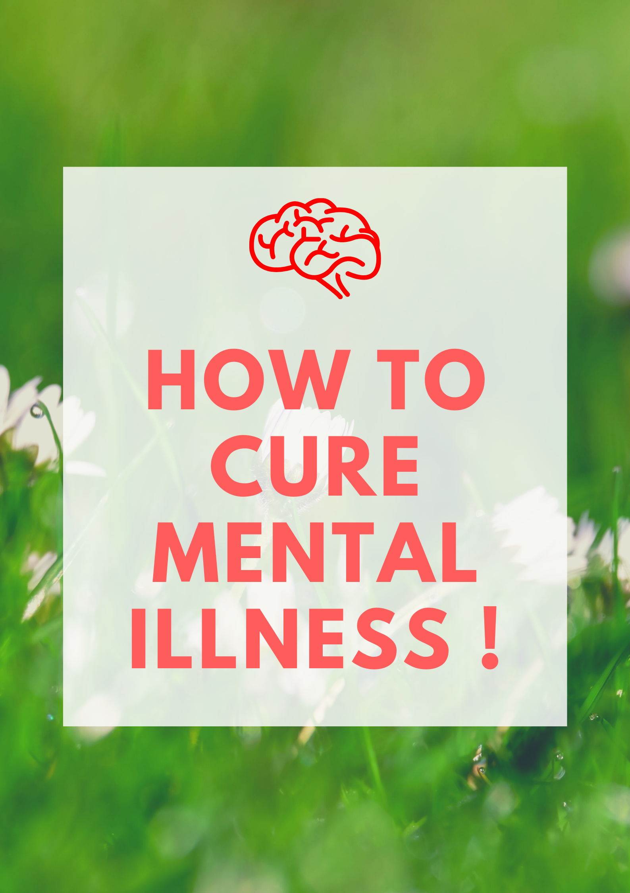
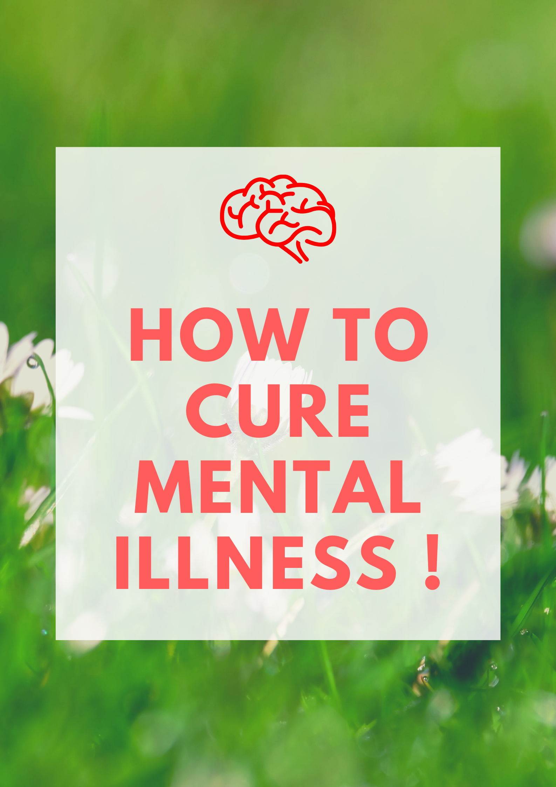

#HOW TO RECOGNISE WHEN TO ASK FOR HELP
Sometimes problems seem like they are impossible to solve for many different reasons. Sometimes we are not even fully aware a problem
is building up. We just know something is wrong.
When problems build up, even the strongest individuals may think about suicide. Yet suicide is not the answer. Are you, or someone you
know, at risk for suicide? Seek help if you notice any of the following warning signs:
* Threatening to hurt or kill self
* Feeling trapped, like there’s no way out
* Looking for ways to kill self
* Abusing drugs or alcohol
* Trying to get pills, guns, or other means to harm oneself
* Withdrawing from friends or family
* Talking or writing about death, dying or suicide
* Having dramatic changes in mood
* Feeling hopeless
* Feeling like there is no reason for living, no sense of purpose in life
* Experiencing rage, uncontrolled anger or seeking revenge
* Sleeping too much or too little
* Acting reckless or engaging in risky activities
* Giving away possessions
If you are experiencing any of these warning signs, the first thing to do is ask for help. Asking for help can be as easy as picking
up the phone and calling the Veterans Crisis Line at 1-800-273 TALK (8255) and pressing Option 1. The crisis line is staffed around
the clock, 365 days a year by trained professionals who know how to get you the help you need.
#TYPICAL MYTHS AND REALITIES
Myth: Asking about suicide will plant the idea in a person’s head.
Reality: Asking about suicide does not create suicidal thoughts. The act of asking the question simply gives the veteran permission to
talk about his or her thoughts or feelings.
Myth: There are talkers and there are doers.
Reality: Most people who die by suicide have communicated some intent. Someone who talks about suicide gives the guide and/or clinician
an opportunity to intervene before suicidal behaviors occur.
Myth: If somebody really wants to die by suicide, there is nothing you can do about it.
Reality: Most suicidal ideas are associated with treatable disorders. Helping someone find a safe environment for treatment can save a life.
The acute risk for suicide is often time-limited. If you can help the person survive the immediate crisis and overcome the strong intent to
die by suicide, you have gone a long way toward promoting a positive outcome.
Myth: He/she really wouldn't commit suicide because…
he just made plans for a vacation
she has young children at home
he made a verbal or written promise
she knows how dearly her family loves her
Reality: The intent to die can override any rational thinking. Someone experiencing suicidal ideation or intent must be taken seriously and
referred to a clinical provider who can further evaluate their condition and provide treatment as appropriate.
#VETERAN SPECIFIC RISKS
* Frequent deployments
* Deployments to hostile environments
* Exposure to extreme stress
* Physical/sexual assault while in the service (not limited to women)
* Length of deployments
* Service related injury
#KNOW MORE ABOUT MENTAL HEALTH :
 
